Voor deze opdracht moesten we een Encylopedia Vulgaris maken met minstens 100 zelfgekozen objecten. Ik koos ervoor materiaal te verzamelen, dat ik op mijn kot kon vinden. Ik fotografeerde de objecten of scande ze in en verdeelde ze in drie categorieën, namelijk: rechthoeken, cirkels en driehoeken.
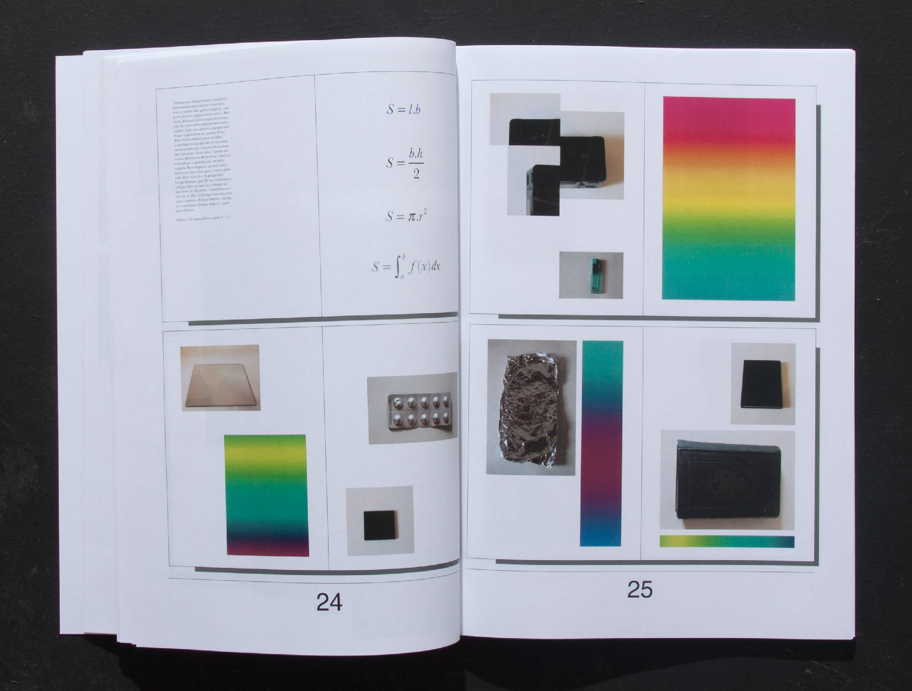
Voor deze opdracht moesten we een Encylopedia Vulgaris maken met minstens 100 zelfgekozen objecten. Ik koos ervoor materiaal te verzamelen, dat ik op mijn kot kon vinden. Ik fotografeerde de objecten of scande ze in en verdeelde ze in drie categorieën, namelijk: rechthoeken, cirkels en driehoeken.
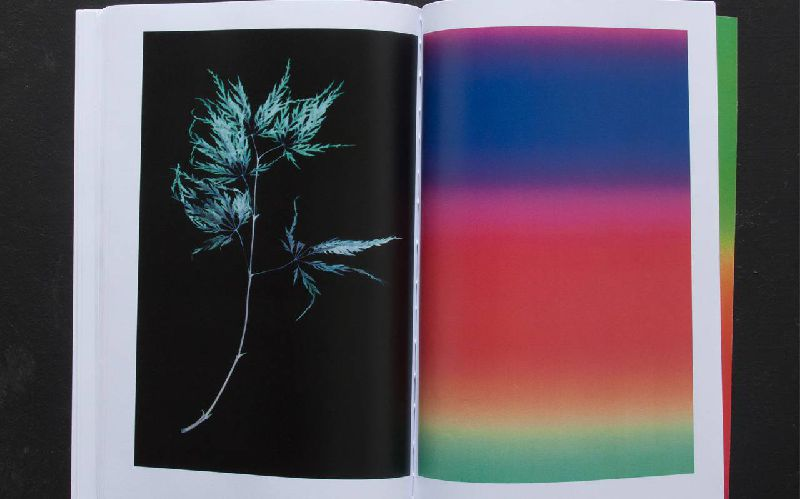
Dit zijn drie platenhoezen, die ik ontworpen heb. De docenten legden ons twee platen op, 'Songs of British Birds' en 'Oblique Strategies' (wat eigenlijk geen plaat is, maar een doosje vol kaartjes, gemaakt door Brian Eno, die je moet lezen wanneer je een creative block hebt), en we moesten een extra plaat kiezen. Voor deze opdracht moesten we ook een lettertype creëren, die aansloot bij het thema van je platen en je ontwerpen. In 'Oblique Strategies' vond ik een kaartje waarop stond: 'Go outside, shut the door' en op de plaat 'Songs of British Birds' staan letterlijk vogelzangen. Meteen werd de link gelegd naar de natuur en daarmee ook naar mijn derde plaat 'What a Wonderful World' van Louis Armstrong. Mijn lettertype is geïnspireerd op de geluidsgolven van de vogelgeluiden, die op de plaat 'Songs of British Birds' staan.
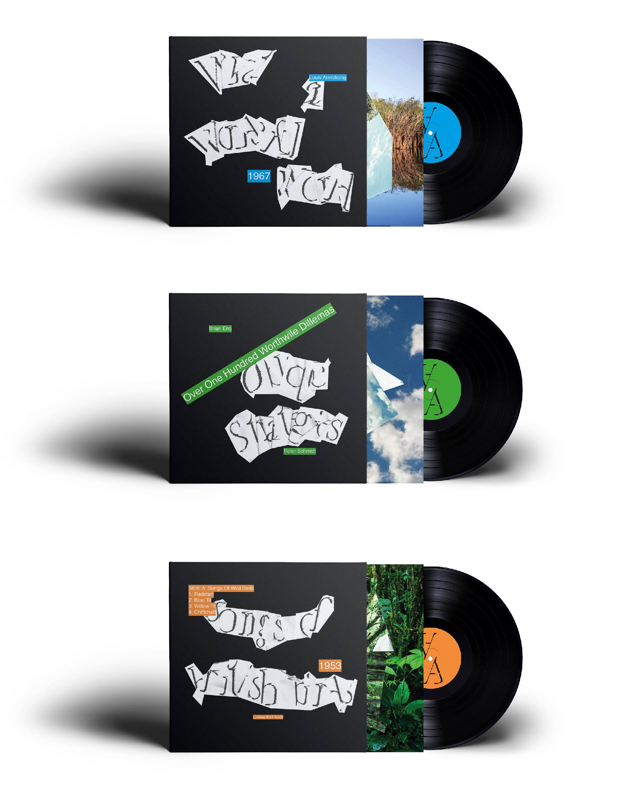
Deze poster is gemaakt voor Woody Allen's film 'Bananas'. We werden gevraagd om één regisseur te kiezen uit een lijst van acht, en drie filmposters te ontwerpen voor drie van zijn/haar films. De posters moesten een identiteit zijn voor de regisseur. Ik heb de hoofden in 2 stukken geknipt en ze op de randen van de poster gezet, wat je een neurotisch gevoel moet geven. Deze keuze, omdat Woody Allen heel neurotisch is.
Dit is een van de binnenhoezen, die ik gemaakt heb voor de platenhoezen opdracht. Ik printte enkele foto's uit van de natuur en vouwde ze op. Dit verwijst naar de continue verandering van de natuur.
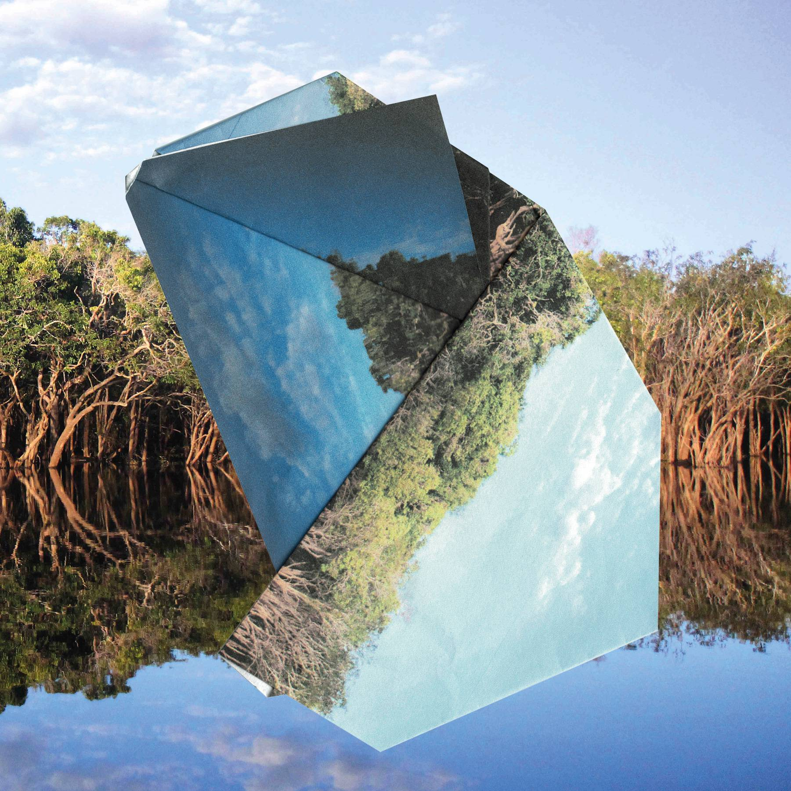
Dit is een van de binnenhoezen, die ik gemaakt heb voor de platenhoezen opdracht. Ik printte enkele foto's uit van de natuur en vouwde ze op. Dit verwijst naar de continue verandering van de natuur.
Dit is een van de binnenhoezen, die ik gemaakt heb voor de platenhoezen opdracht. Ik printte enkele foto's uit van de natuur en vouwde ze op. Dit verwijst naar de continue verandering van de natuur.
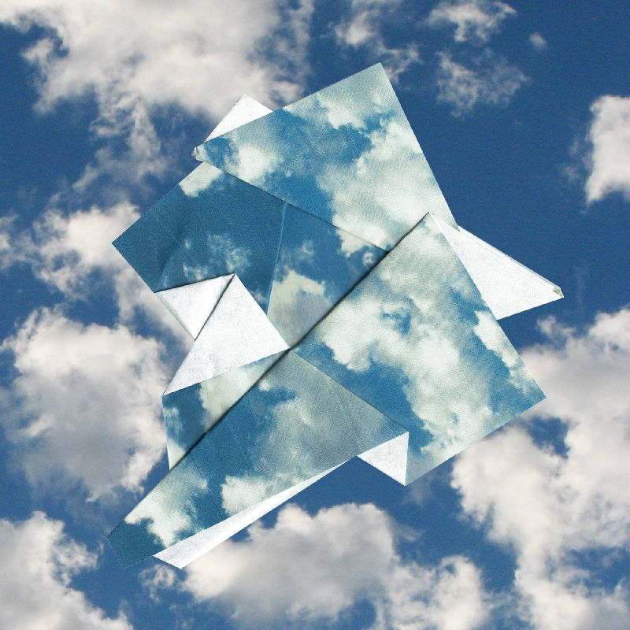
Dit is de achterkant van een van de drie platenhoezen.
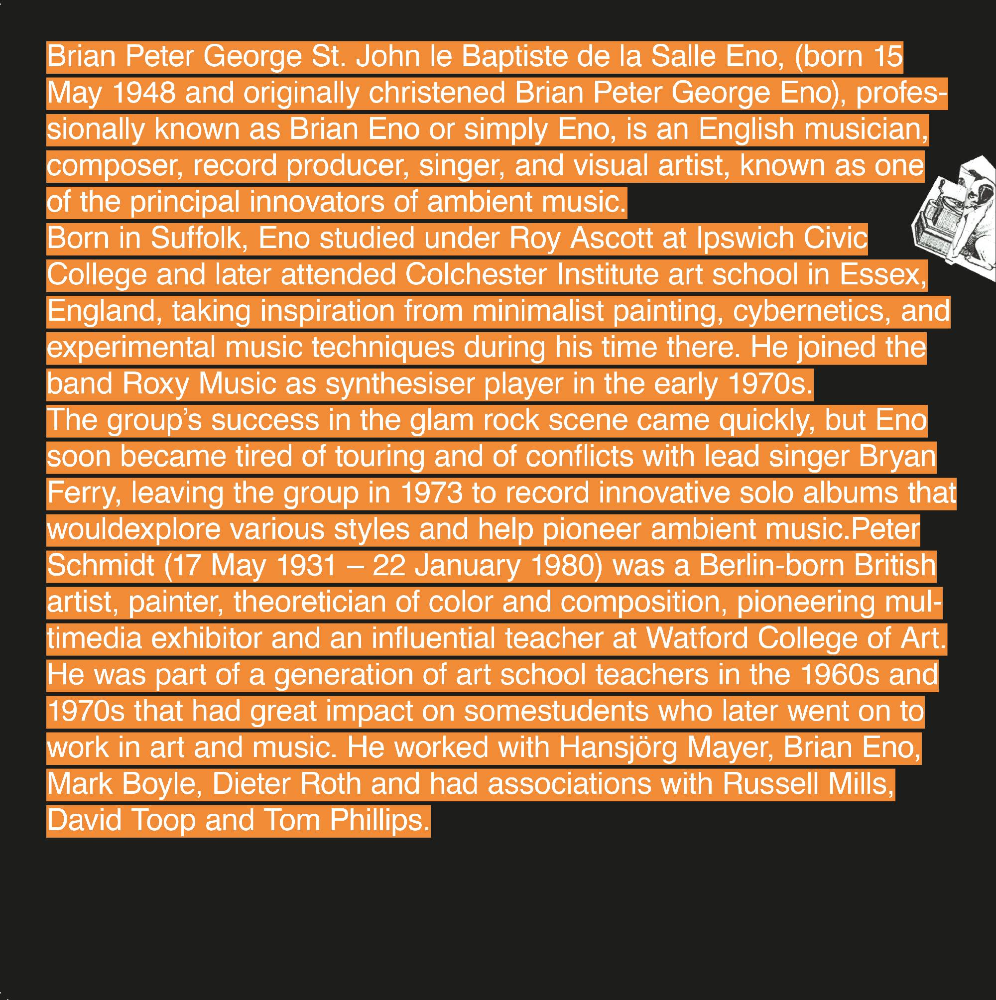
'Summerwaves' is een jaarlijkse fuif, georganiseerd door de redders van Bredene. Dit is de tweede poster, die ik gemaakt heb voor hen. Ik moest de poster er tropisch laten uitzien, dus ik begon beelden uit te printen van stranden en exotische dieren en vouwde ze of knipte ze in stukken. Daarna voegde ik al die delen samen. Alle dieren op de poster zijn samengesteld uit verschillende dieren.
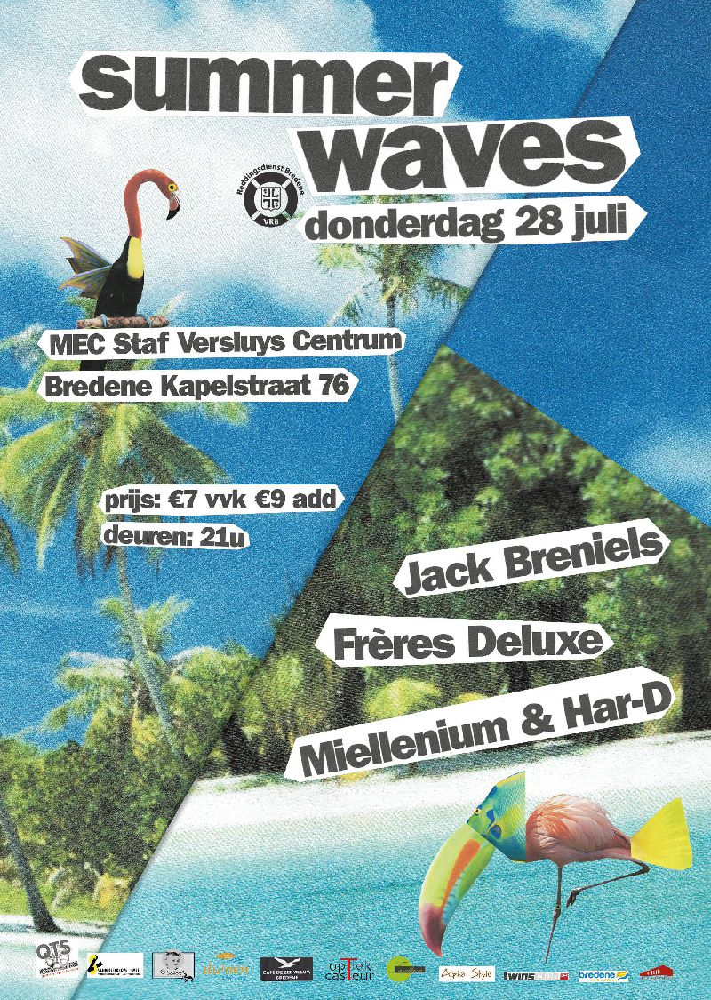
Voor deze opdracht moesten we een sensatie opwekken, door enkel twee beelden te gebruiken.
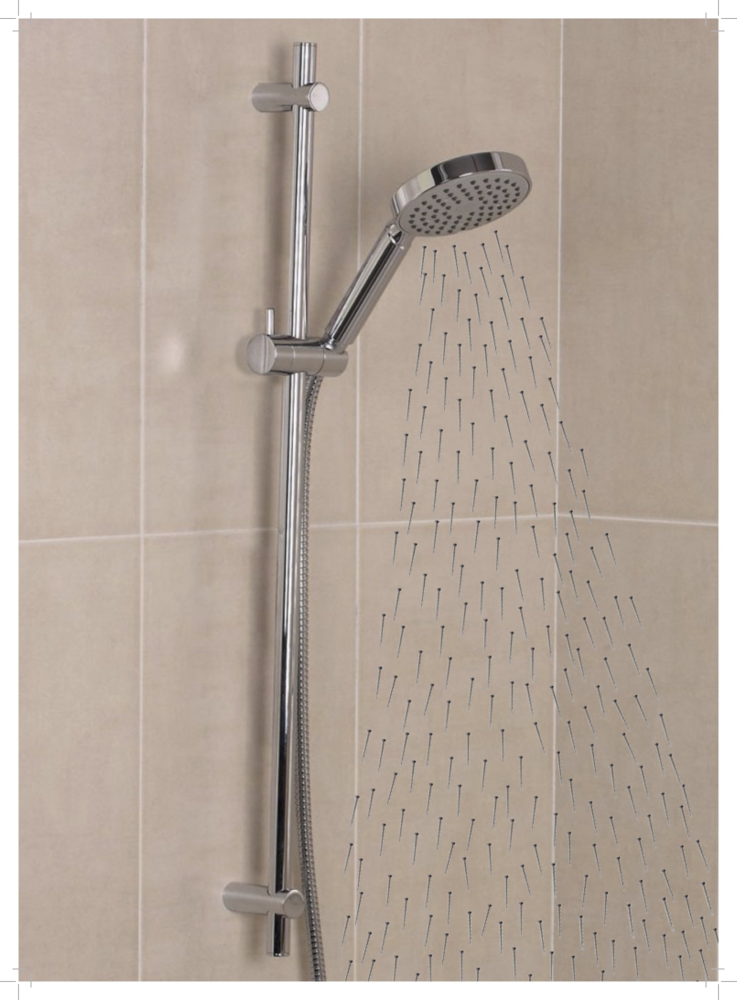
Voor deze opdracht moesten we een sensatie opwekken, door enkel twee beelden te gebruiken.
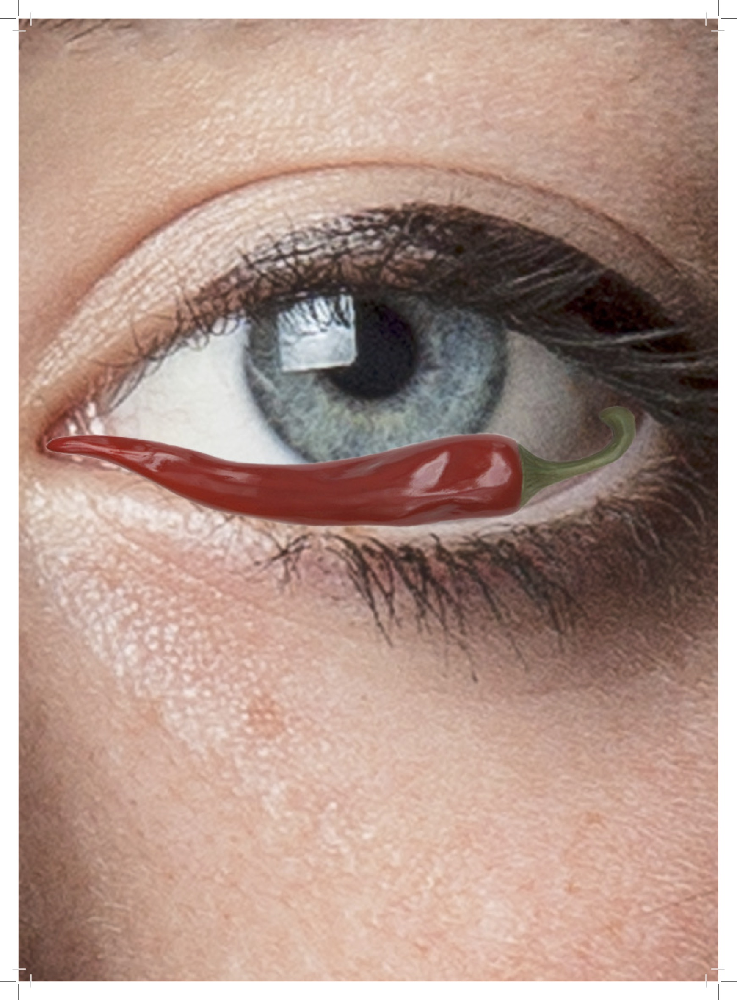
Voor deze opdracht moesten we een sensatie opwekken, door enkel twee beelden te gebruiken.
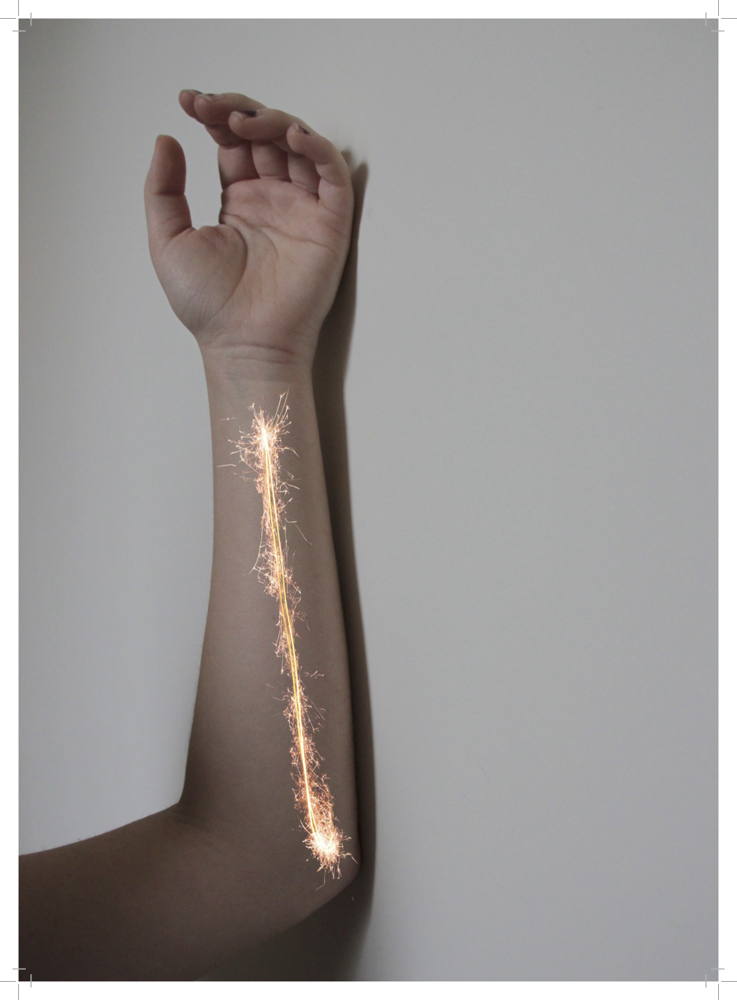
Dit zijn twee posters, die ik gemaakt heb voor de Ghent Art Book Fair, een evenement, die plaatsvond op 5 en 6 mei 2017. Een poster diende voor het aankondigen van het evenement en de andere werd tentoongesteld op het festival zelf.
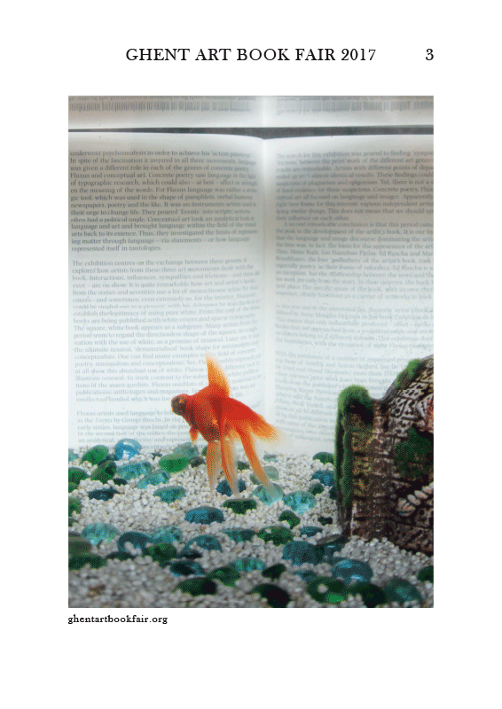
Ik maakte dit logo voor een fictief bedrijf met de naam 'Printopia'. Dit was een onderdeel voor een schoolopdracht.